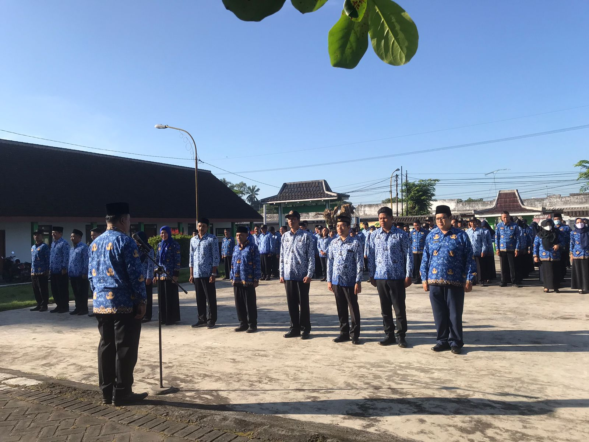
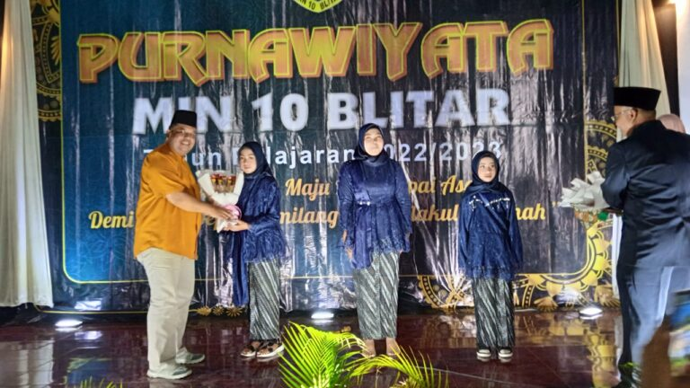
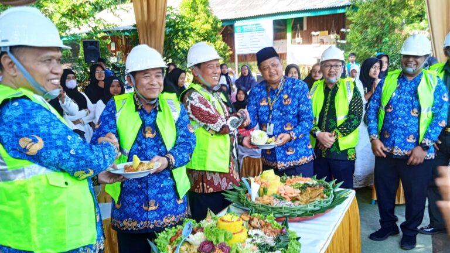
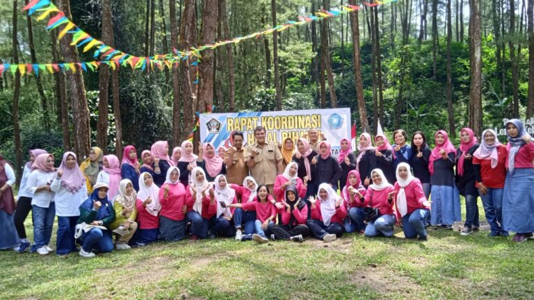
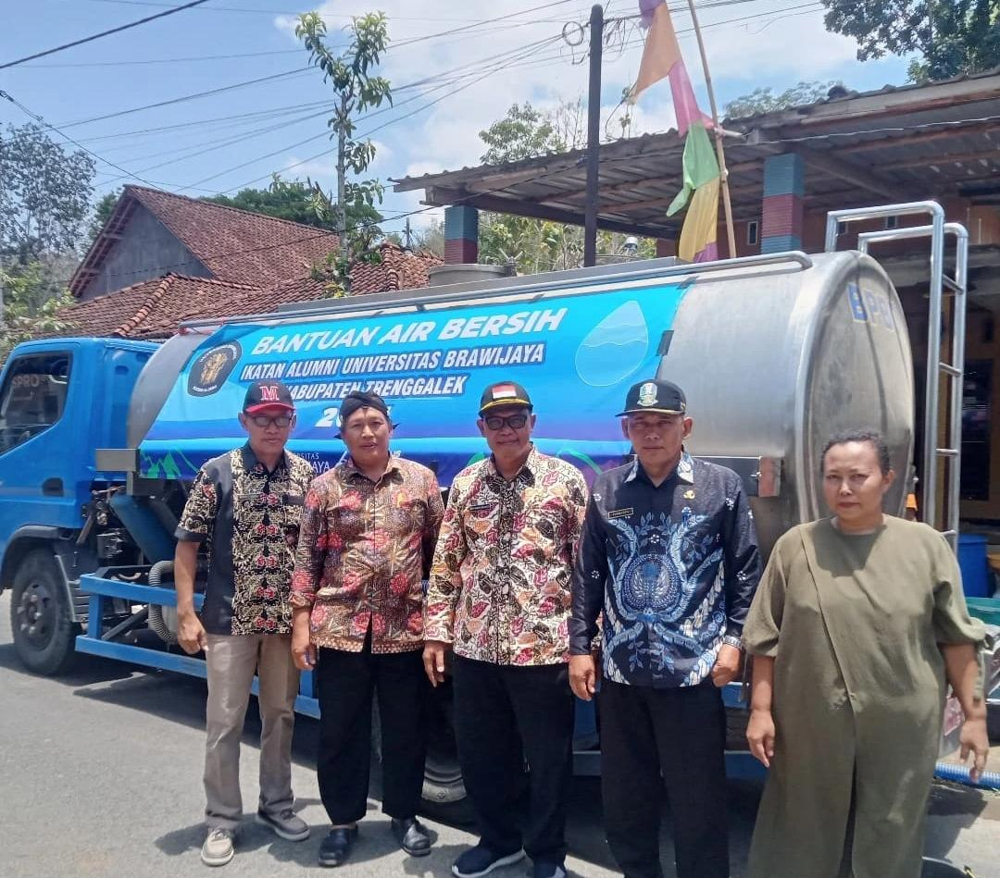
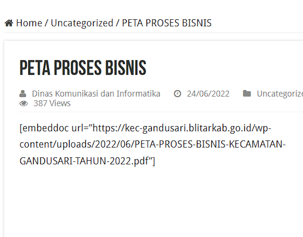

Sistem terpadu untuk memudahkan akses layanan administrasi dan informasi kecamatan secara cepat, transparan, dan efisien bagi seluruh masyarakat.
Layanan digital Kecamatan Gandusari yang dapat diakses untuk mendukung kebutuhan administrasi masyarakat secara cepat dan terintegrasi.
Informasi jadwal undangan resmi kegiatan kecamatan dan agenda pemerintahan.
Buka Layanan →Layanan penjadwalan permintaan data administrasi yang terstruktur dan sistematis.
Buka Layanan →Informasi jadwal pelaksanaan apel dan kegiatan internal kecamatan secara berkala.
Buka Layanan →Layanan informasi dan pengurusan administrasi Kartu Tanda Penduduk Elektronik.
Buka Layanan →Informasi jadwal pelaksanaan sidang waris sebagai layanan administrasi hukum masyarakat.
Buka Layanan →Layanan informasi dan administrasi Pajak Bumi dan Bangunan untuk mendukung kepatuhan.
Buka Layanan →Layanan pengelolaan dokumen arsip secara tertata untuk kemudahan akses informasi.
Buka Layanan →Layanan administrasi perwalian dan legalisasi dokumen sesuai ketentuan yang berlaku.
Buka Layanan →Akses ke dokumen dan layanan tambahan untuk menunjang kebutuhan administrasi masyarakat.
Informasi dan dokumentasi kegiatan terbaru Kecamatan Gandusari.

Apel Kerja Kecamatan Gandusari rutin dilaksanakan setiap hari Senin, diikuti oleh Bpk Camat Gandusari, ibu Sekcam Gandusari beserta jajaran dan staf, Kepala UPT Puskesmas serta seluruh perangkat desa Se-Kecamatan Gandusari.

Purnawiyata Siswa-Siswi Kelas VI MIN 10 Blitar (Sukosewu Gandusari), dihadiri Bpk Camat Gandusari, Kepala Desa Gandusari, PPAI Kec. Gandusari, Kepala Sekolah dan Guru MIN 10 Blitar.

Ground Breking / Peletakan Batu Pertama Pembangunan Kelas Baru MIN 10 Sukosewu Kecamatan Gandusari dihadiri oleh Bpk. Sekda Kabupaten Blitar dan Camat Gandusari bersama Muspika.

Rapat Koordinasi dan Halal Bihalal Pengurus TP Kabupaten Blitar dengan TP PKK Kecamatan Se-Kabupaten Blitar, bertempat di Hutan Pinus Loji Tulungrejo-Gandusari, 16 Mei 2023.

Beberapa keluarga di Desa Wonoanti dan Desa Sukorejo nampak. tersenyum lega dan mengucapkan terimakasih atas bantuan air bersih.

Dokumen Peta Proses Bisnis Kecamatan Gandusari yang menggambarkan alur pelayanan administrasi dan tata kelola pemerintahan kecamatan secara sistematis.
Hubungi kami untuk keperluan pelayanan dan informasi lebih lanjut.
Akses dokumen penting dan tautan resmi Kecamatan Gandusari.